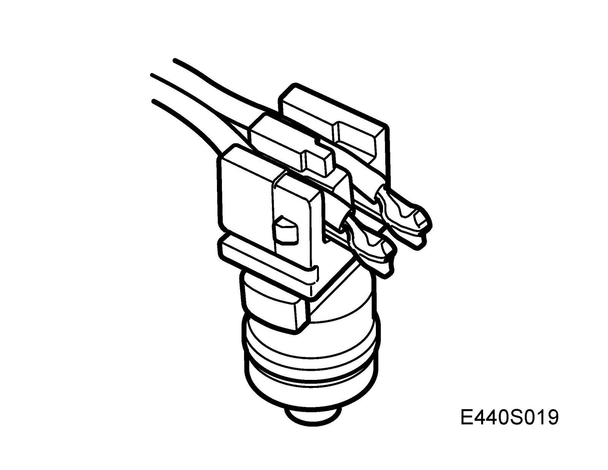
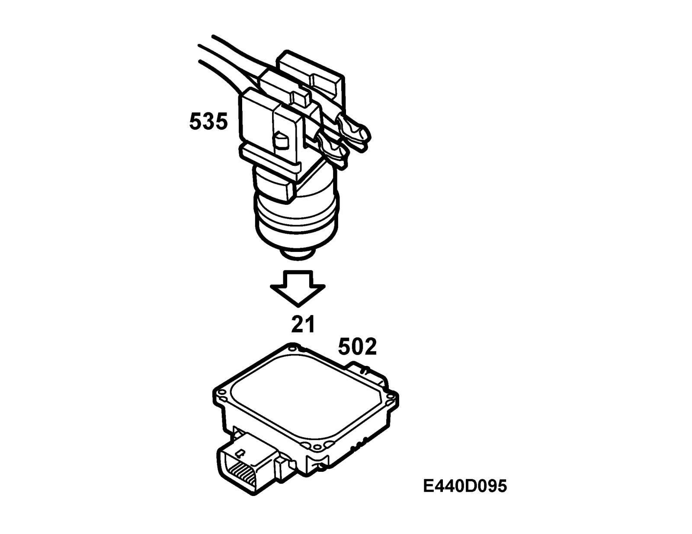
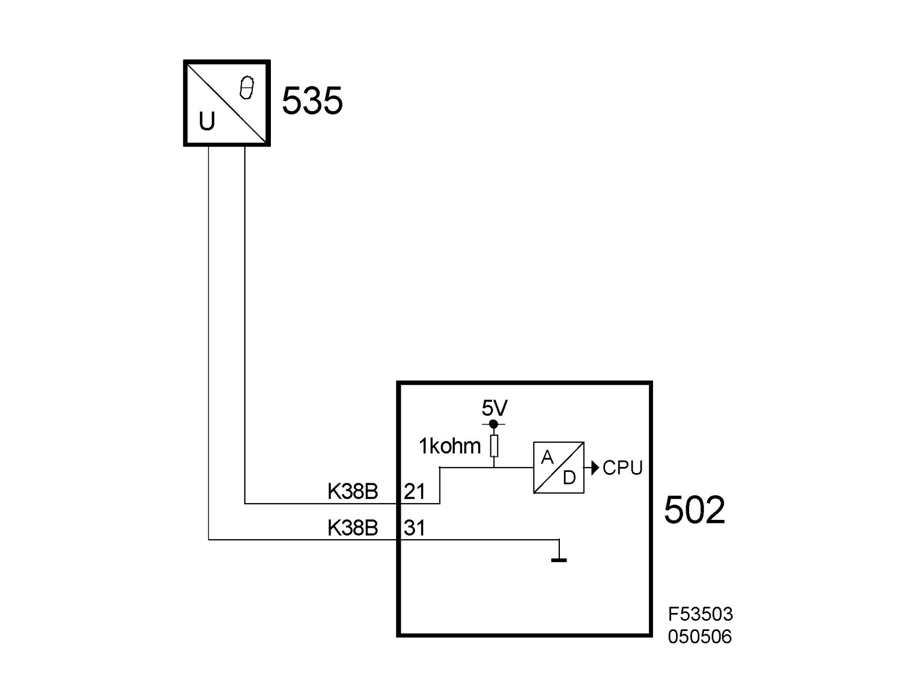

Transmission Temperature Sensor/Switch: Description and Operation
Temperature sensor, gearbox oil, FA 57 (535)Location
Transmission fluid temperature sensor (535)
Main use
To inform the control module of the current oil temperature.

Type
The sensor is an NTC resistor in a metal casing. The characteristics of the NTC resistor mean that the resistance drops as the temperature rises.
Activation
The NTC resistor is powered with 5V through a pull-up from control module pin 21(B) and is grounded through pin 31 (B).

